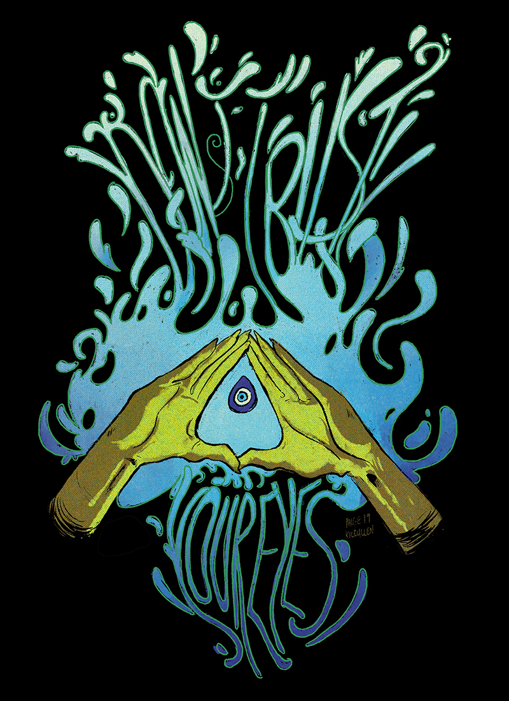
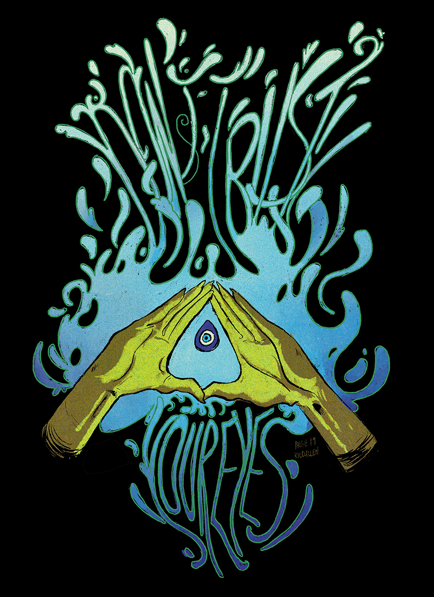

Illustrator from St. Louis, Missouri with a specialization in digital media.
Available for Freelance and personal commissions.
selected works:
 

 Services include but are not limited to logo design, photography, branding, illustrative assets, and print production.
Services include but are not limited to logo design, photography, branding, illustrative assets, and print production.
Email for consultation: Paigekilcullen96@gmail.com
Personal use art starts at $75 USD.